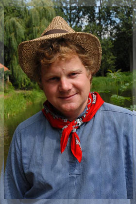
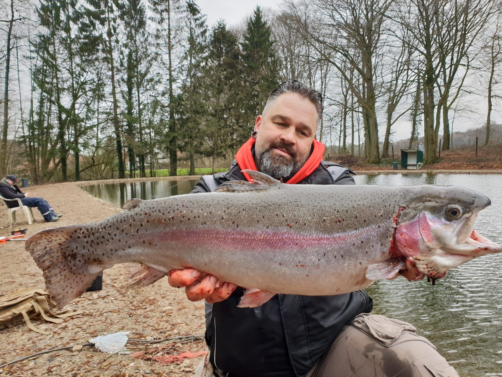

Über uns
Ein Familienbetrieb mit Leidenschaft fürs Angeln, mitten im Münsterland.
Unsere Geschichte
Aus Leidenschaft zum eigenen Forellenhof
Angefangen hat alles ganz in der Nähe, in unserer direkten Nachbarschaft in Börnste, in einer alten Fischzuchtanlage.
Edwin, unser Chef, ist selbst begeisterter Angler. Er hat sein Hobby zur Berufung gemacht und seinen eigenen Forellenhof eröffnet.
Wir arbeiten jeden Tag daran, dass unsere Gäste sich bei uns wohlfühlen und mit einem guten Fang nach Hause fahren.

Edwin Timmer
und Familie
und Familie

An unseren Teichen
Diese Fische können Sie bei uns fangen
Neben Forellen und Lachsforellen schwimmt in unseren Teichen eine große Vielfalt an Fischarten.
ForellenWelseZanderHechteStöreSaiblingeKarpfenSchleienAale
Neugierig geworden?
Kommen Sie vorbei und lernen Sie uns kennen. Wir freuen uns auf Sie! Viele Grüße, Familie Timmer